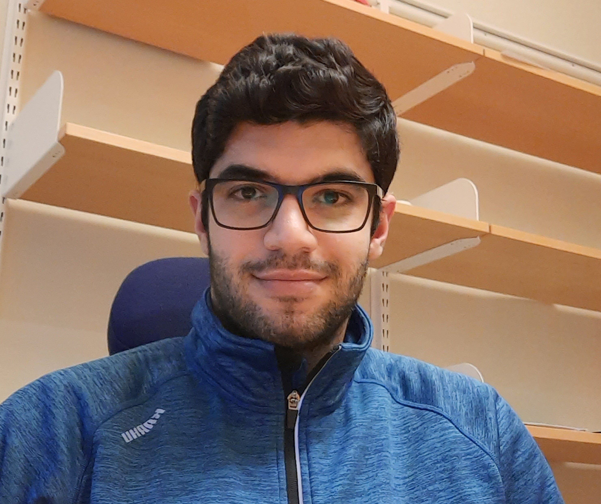

Ali Sahraee

Ali Sahraee is a senior B.Sc. student in Computer Engineering at Sharif University of Technology, Tehran, Iran. He is a member of Embedded Systems Research Laboratory (ESR-LAB) at the department of computer engineering, Sharif University of Technology. His research interests include Real-Time/Low-Power/Fault-tolerant Embedded Systems, Low-Power Systems Design, Fault-Tolerant Systems Design, Cyber-Physical Systems & Internet of Things, Dependability/Reliability of Multi-/Many-Core Systems, Low-Power Neural Network Accelerators.
Emails : ali.sahraee2015@student.sharif.edu, asahraee111286@gmail.com, asahraee@ce.sharif.edu
Education
- 2015 - Present
- 2011 - 2015
- Shahid Beheshti High School (NODET), Kermanshah
- GPA = 19.8/20
Research Interests
- Embedded Systems
- Real-Time Embedded Systems
- Low-Power Embedded Systems
- Fault-tolerant Embedded Systems
- Low-Power Systems Design
- Fault-Tolerant Systems Design
- Dependability/Reliability of Multi-/Many-Core Systems
- Low-Power Neural Network Accelerators
Publications
- Writng Papers:
Mohsen Ansari, Ali Saharee, Sina Yari-Karin, Javad Saber-Latibari, Alireza Ejlali, “Reliability, Power and Thermal Management in Multi-core Systems: A Survey”.
Honors and Awards
Ranked 91st among more than 300,000 participants in the nationwide university entrance exam. Admission to Sharif University of Technology B.S. program.
Admitted to NODET (National Organization for Exceptional Talents) by passing an exam with below 2% acceptance rate.
Teaching Assistant Experience
Fault-Tolerant Systems Design (Graduate), Sharif University of Technology, Department of Computer Engineering, Fall 2019, Dr. Alireza Ejlali.
Digital Systems Design (Undergraduate), Sharif University of Technology, Department of Computer Engineering, Spring 2019 and Fall 2018, Dr. Alireza Ejlali.
Operating Systems (Undergraduate), Sharif University of Technology, Department of Computer Engineering, Spring 2019, Dr. Hamed Farbeh.
Computer Architecture (Undergraduate), Sharif University of Technology, Department of Computer Engineering, Fall 2018, Dr. Hamed Farbeh.
Fundamentals of Computer Programming (Python) (Undergraduate), Sharif University of Technology, Department of Computer Engineering, Spring 2018, Instructor: Mahdi Eshaghi (Course Link)
Fundamentals of Computer Programming (C/C++) (Undergraduate), Sharif University of Technology, Department of Computer Engineering, Fall 2017, Instructor: Vahid Khodabakhshi (Course Link)
Fundamentals of Computer Programming (C/C++) (Undergraduate), Sharif University of Technology, Department of Computer Engineering, Fall 2016, Instructor: Sahar Yousefi (Course Link)
Skills
- Programming Languages:
- Proficient in C/C++, Python, CUDA, MATLAB & SIMULINK, Verilog, R, Bash.
- Familiar with Java, Android, X86 and IBM360 Assembly.
- Software & Tools: Git, GEM5, ModelSim, HSpice, Synopsys Design Compiler, SoC Encounter, Proteos, Quartus II, Xilinx ISE, PSpice, GNS3, and Packet Tracer
- Boards: Arduino uno/nano, FPGA DE2 altera, Beaglebone Black, and Raspberry Pi 3
- Operating Systems:
- Native Linux user.
- Familiar with Windows.
- RTOS, ucos, RTLinux
- Typesetting:Proficient in LATEX. Familiar with LibreOffice and Microsoft Office.
- Web Development:Familiar with HTML, CSS, JS, PHP5.
Selected Courses
- Graduate Course, Spring 2019 Low Power Design (20/20) (Dr. Alireza Ejlali) (Ranked 1st)
- Graduate Course, Fall 2018 Fault Tolerant Systems (18.7/20) (Dr. Alireza Ejlali) (Ranked 8th)
- Undergraduate Course, Spring 2019 Advance Topics in Hardware Engineering - Embedded Systems & IoT (20/20) (Dr. Amir Mahdi Hosseini Monazzah & Bardia Safaei) (Ranked 1st)
- Undergraduate Course, Spring 2018 Advance Digital Design (20/20) (Dr. Alireza Ejlali) (Ranked 1st)
- Undergraduate Course, Fall 2018 Data Transmission (20/20) (Dr. Ali Mohammad Afshin Hemmatyar) (Ranked 1st)
- Undergraduate Course, Spring 2019 Computer Measurement & Control (19.5/20) (Dr. Ali Mohammad Afshin Hemmatyar) (Ranked 1st)
- Undergraduate Course, Fall 2018 VLSI Design (19.3/20) (Dr. Shaahin Hessabi) (Ranked 4th)
- Undergraduate Course, Spring 2018 Microprocessors (18.1/20) (Dr. Nezam Rohbani) (Ranked 10th)
Laboratories:
- Summer 2018 Computer Architecture Laboratory (20/20) (Dr. Shaahin Hessabi) (Ranked 1st)
- Summer 2018 Electrical Circuits Laboratory (20/20) (Dr. Ali Mohammad Afshin Hemmatyar) (Ranked 1st)
- Summer 2018 Digital Electronics Laboratory (19.6/20) (Dr. Somayyeh Koohi) (Ranked 9th)
- Summer 2019 Industrial Automation Laboratory (20/20) (Instructor: Hadi Talebi) (Ranked 1st)
- Summer 2019 VLSI Design Laboratory (19.8/20) (Dr. Shaahin Hessabi) (Ranked 4th)
- Summer 2019 Microprocessor Laboratory (18.9/20) (Dr. Amir Hossein Jahangir) (Ranked 4th)
Extracurricular Activities
- Spring 2018 & 2019, Host, Gatuino (Gate + Arduino) Contest. Gatuino is a student contest is being held yearly in Department of Computer Engineering to make the First year students familiar with the beauties of Computer Architecture and attract them. In the first year we made every team to build a ”wireless Joy-Stick” and at last, held a competition between them. In the second year they build a dot matrix and enters an infinity world to find gems and gain points.
- 2017 - Present, Editor, Rayanesh(Computation) Journal. Rayanesh is a student journal is published monthly at the Department of computer engineering.
- Sports: Mountaineering, Camping, Soccer and Basketball. Actually I'm an avid Soccer and NBA fan. I love camping and being close to nature.
- Music: I'm trying to learn guitar.
Last Update: 04 Oct. 2019
|